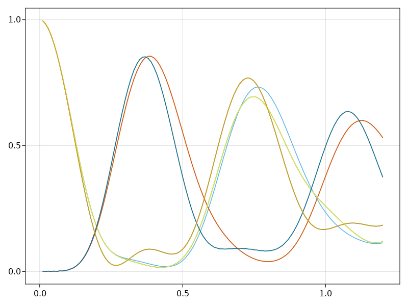
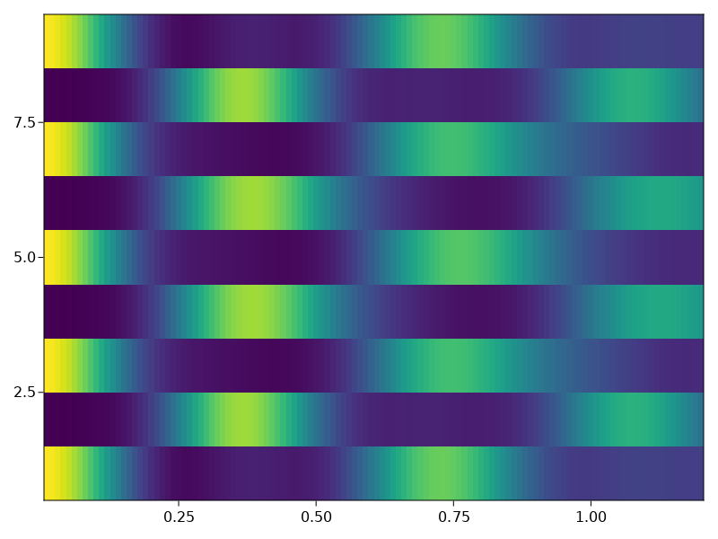
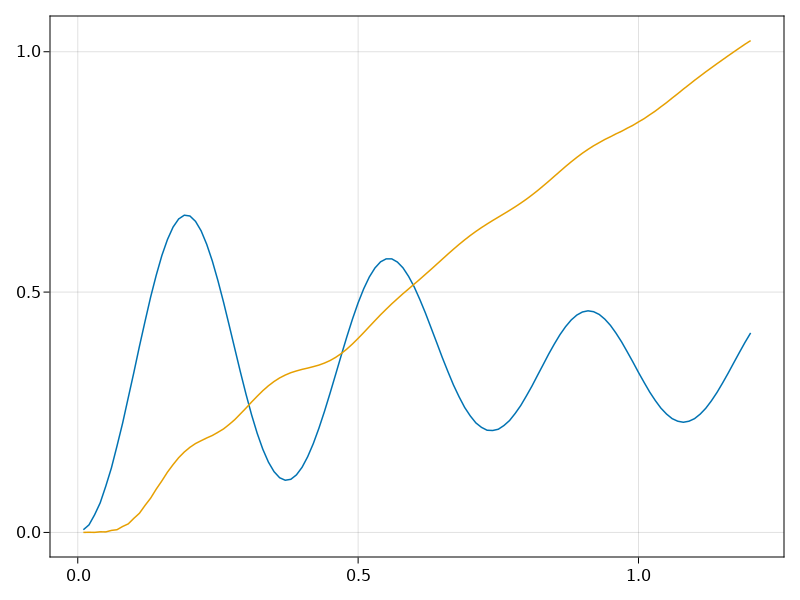

Background
This example is based on part of the experimental study: H. Bernien, et al.. This paper finds that if one starts with particular initial states (e.g. the Neel state), the Rydberg blockade constraint results into persistent revivals of quantum dynamics. Later theoretical studies (e.g. C. J. Turner, et al.) reveal that this behavior is due to very specific eigenstates embeded in the quantum many-body spectuum, called quantum many-body scars.
Quantum many-body scars are in anology with clasical scars in single-particle quantum chaos, where scars represent a concentration of some eigenfunctions along the trajectory of classical periodic orbits. Similarly, in the quantum many-body case, the initial Neel state has a large component of these specific scar states. Under the time evolution of the Rydberg Hamiltonian, the initial state undergoes the trajectory of periodic quantum orbits. The non-thermal behavior is mainly caused by such non-ergodicity in Hilbert space.
In this example, we use the Rydberg Emulator to simulate the evolution of a fully coherent, strongly interacting Rydberg system of 9 qubits. We demonstrate the persistent revivals of many-body dynamics with measurements of the Rydberg density, and entanglement entropy. For a comprehensive review of quantum many-body scars, we refer readers to this very nice paper M. Serbyn et al.
We start by importing required libraries
using EaRyd
using Random
using CairoMakieBuild Haimltonian
We build a 1D-Chain with 9-atom arrangement, with each atom separated from its neighbor by 5.72 $\mu m$. This results in a nearest-neighbor interaction strength of $2 \pi * 24$ MHz. This is much larger than the Rabi oscillations $\Omega = 4\pi$ we will specify below. So the nerest-neighbor Rydberg atoms are within the blockade radius, such that both of the atoms can not be excited simultaneously.
nsites = 9;
atoms = generate_sites(ChainLattice(), nsites, scale=5.72)We then build the Hamiltonian by importing the defined lattice structure and parameters
h = rydberg_h(atoms;C = 2π * 858386, Ω=4π)Hamiltonian
Term 1
∑(n=1:9) 12.6/2 σ^x
Term 2
∑(n=1:9) 5.39e6/|r_i - r_j|^6 n_i n_jEmulate the problem
We evaluate the quench dynamics of the Rydberg atom array initially prepared in a Neel product state. Such an initial state can be created by
init = product_state(bit"101010101")ArrayReg{1, ComplexF64, Array...}
active qubits: 9/9We can now set up discrete time evolution problem with timestep ts = 0.01 for 120 iterations using Krylov solver
iteration = 1:120
ts = [0.01 for _ in iteration];
hs = [h for _ in iteration];
clocks = cumsum(ts);
prob = KrylovEvolution(init, ts, hs)KrylovEvolution{Float64}:
reg: ArrayReg{1, ComplexF64, Matrix{ComplexF64}}
reg storage: 8.000 KiB
total duration: 1.2000000000000002 μs
hamiltonian:
Hamiltonian
Term 1
∑(n=1:9) 12.6/2 σ^x
Term 2
∑(n=1:9) 5.39e6/|r_i - r_j|^6 n_i n_j
⋮
Hamiltonian
Term 1
∑(n=1:9) 12.6/2 σ^x
Term 2
∑(n=1:9) 5.39e6/|r_i - r_j|^6 n_i n_j
hamiltonian storage: 61.887 KiB
options:
progress: false
progress_step: 1
progress_name: "emulating"
normalize_step: 5
normalize_finally: trueThen we measure the real-time expectation value of Rydberg density, domain wall density, and entanglement entropy. These data are stored in the matrix or vector below.
density_mat = zeros(nsites, length(iteration))
domain_mat = zeros(nsites-1, length(iteration))
entropy_vec = zeros(length(iteration))
for info in prob
for i in 1:nsites
density_mat[i, info.step] = expect(put(nsites, i=>Op.n), info.reg)
end
for i in 1:nsites-1
corr = real(expect(put(nsites, (i, i+1)=>kron(Op.n, Op.n)), info.reg))
obs = density_mat[i, info.step] + density_mat[i+1, info.step] - 2corr
domain_mat[i, info.step] = obs
end
rho = density_matrix(info.reg, (1,2,3,4,5))
entropy_vec[info.step] = von_neumann_entropy(rho)
endPlot the results
Now we first plot the Rydberg density for each site as a function of time
fig = Figure(size=(5, 3));
ax = Axis(fig[1, 1])
for i in 1:nsites
lines!(clocks, density_mat[i, :])
end
fig
To better illustrate the revivals, we plot the results in the colormap
heatmap(clocks, 1:nsites, density_mat')
We can see that there is a clear oscillations between the two partterns of the Rydberg density.
Finally we plot the average domain wall number and entanglement entropy as a function of time
fig = Figure(size=(5, 3));
ax = Axis(fig[1, 1])
domain_avg = ones(length(iteration))-vec(sum(domain_mat, dims=1)/(nsites-1))
lines!(ax, clocks, domain_avg)
lines!(clocks, entropy_vec)
fig
A different initial state
In order to show that the revivals depends strongly on the initial state, we now choose a different initial state
init1 = product_state(bit"100000101")
prob1 = KrylovEvolution(init1, ts, hs)
density_mat1 = zeros(nsites, length(iteration))
for info in prob1
for i in 1:nsites
density_mat1[i, info.step] = expect(put(nsites, i=>Op.n), info.reg)
end
end
heatmap(clocks, 1:nsites, density_mat1')From the above figure, we see that the density does not show long-lived oscillations.
This page was generated using Literate.jl.